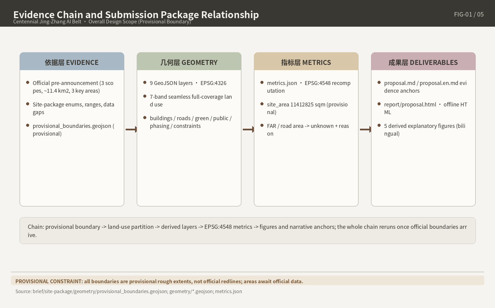
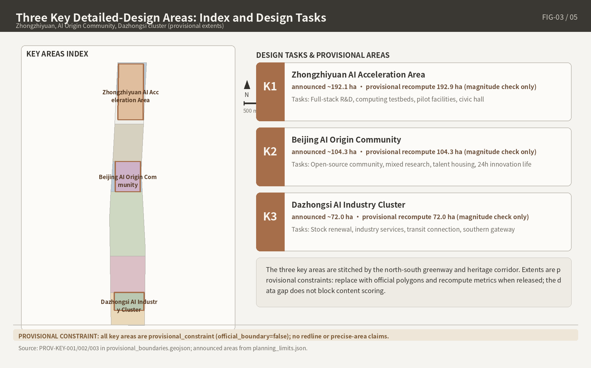
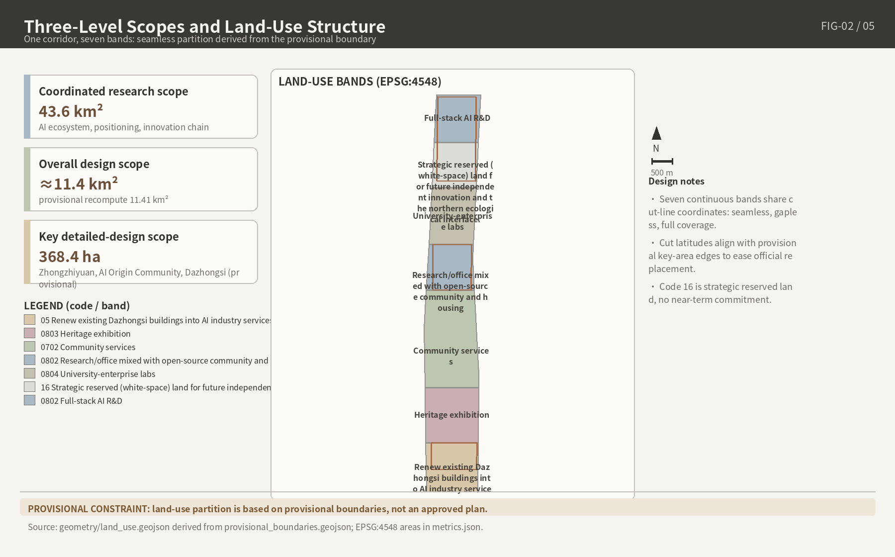
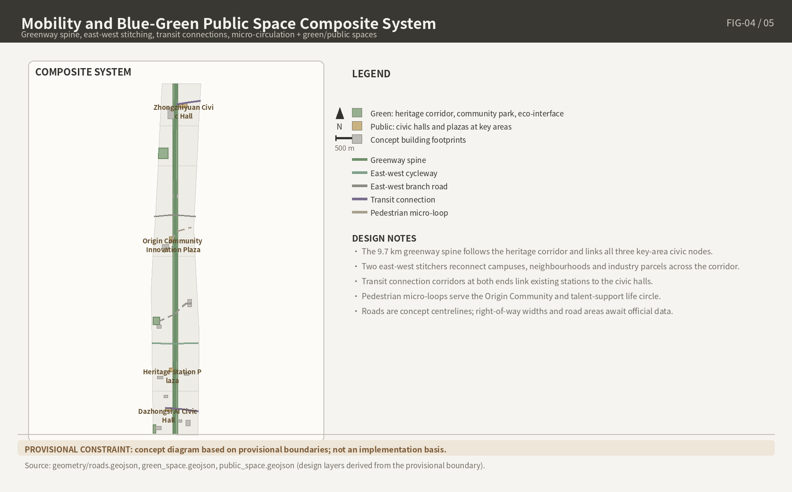

Overview Map and Three-Level Scope

Three-level scope: 43.6 km² coordinated research area / 11.4 km² overall design area / 368.4 ha key areas (three sites). The map is based on the repository-registered provisional boundary, not an official redline.
Key Areas (Three Detailed Design Sites)

All three key areas are provisional_constraint (official_boundary=false): Zhongzhiyuan AI Indigenous-Innovation Acceleration Area, Beijing AI Origin Community, and Dazhongsi AI Industry Cluster.
Land-Use Zones and Buildings

| East-west functional band | Area (m²) | Leading function |
|---|---|---|
| LU-001 | 1,517,250.379 | Northern innovation source band (toward Zhongzhiyuan) |
| LU-002 | 1,738,608.869 | Qinghe blue-green interface band |
| LU-003 | 3,006,997.433 | Heritage-park vitality spine |
| LU-004 | 1,226,610.269 | Wudaokou campus-adjacent innovation band (Origin Community) |
| LU-005 | 1,486,567.535 | Central mixed-renewal band |
| LU-006 | 1,186,083.435 | Dazhongsi industry cluster band |
| LU-007 | 1,250,702.653 | Southern urban service band |
Seven continuous east-west bands cover the overall design area seamlessly without gaps or overlaps; a 4.813 m² rounding difference between the band total and site_area_sqm is disclosed in Chapter 7 of the proposal. The buildings layer contains 11 conceptual building footprints totaling 203,401.112 m²; total floor area 2,040,210.034 m² is a low-confidence design estimate, not an approved figure.
Transport, Slow Mobility, and Blue-Green Public Space

| System element | Metric | Design note |
|---|---|---|
| Green space | 1,290,877.036 m² | Jing-Zhang heritage-park vitality belt as the spine, connecting the Qinghe and Xiaoyuehe blue-green corridors |
| Public space | 84,399.550 m² | Operable nodes: station plazas, roadshow halls, open-source release venues |
| Roads and slow mobility | 7 LineStrings | roads.geojson expresses micro-circulation, slow-mobility stitching and rail interchanges; road_area_sqm is unknown (no official road redlines) |
Rail facts: the Line 13 split is not complete; the northern new section partially opened as Line 18 on 2025-12-27; Qinghua Donglu Xikou station is not yet open; the in-station transfer between Lines 12 and 13 at Dazhongsi is not in service (out-of-station transfer still required, reasonably not earlier than end-2027).
AI Scenarios and Renewal Projects
AI Scenarios (12 scenario cards, listed)
01 Open-source release hall02 Safety-governance sandbox03 Edge-compute station04 AI slow-mobility navigation05 Dazhongsi international roadshow hall06 Qinghe low-carbon innovation corridor07 Campus-adjacent tech-transfer street08 Data-element reception hall09 AI life-service pilot street10 Global AI week route11 Heritage-narrative AR trail12 Community deliberation assistantAll scenarios follow data minimization, public-source, explainability and human-review principles; no personal trajectory collection, no unauthorized personal profiling; all are conceptual proposals, not government implementation commitments. Three industrial test-and-validation scenarios and six user personas are detailed in Chapter 6 of proposal.en.md.
Renewal Projects and Phasing
| Phase | Area (m²) | Implementation logic |
|---|---|---|
| Near term (PHASE-001) | 2,743,860.648 | Light-touch facilities, operations and service platforms first |
| Mid term (PHASE-002) | 6,232,173.837 | Renewal projects pending official regulatory-plan and ownership conditions |
| Long term (PHASE-003) | 2,436,786.088 | Long-term governance framework and operational consolidation |
Task Coverage, Self-Check Status, Sources and Assumptions
Task Coverage
- 17 mandatory tasks from announcement sections 1.3 / 1.4 / 1.5 plus 6 agent tasks (agent.1–agent.6): all 23 covered with mandatory=true (compliance_matrix.json)
- All 15 formal design-depth items status=complete (design_depth_matrix.json)
- 6 mandatory standards: 5 addressed; MOHURD-ARCH-DESIGN-DEPTH-2016 marked as a data gap (missing_source_url), not claimed as formally satisfied (standard_matrix.json)
Self-Check Status
- deterministic validation / spatial review / professional review: see self_check.json (latest run prevails before submission)
- Boundary status: provisional geometry — for design generation, self-check, visualization and discussion only; not an official redline, approval basis or precise-area basis
Sources and Assumptions
- Formal source list: sources.json (repository site package, official announcement, agent taskbook, government portals, authoritative media)
- 14 assumptions: assumptions.json (provisional boundary, missing official redlines and regulatory plans, ownership/heritage/municipal/transport items to confirm, area-caliber conflicts, AI-scenario compliance)
- Unknown-metric discipline: 15 unknown metrics such as floor_area_ratio and road_area_sqm are explained in text, never given pseudo-precise values
This page is a fully offline static file: no remote scripts, tiles, fonts or images; no iframes, forms, external APIs or tracking code. Chinese counterpart: index.html.